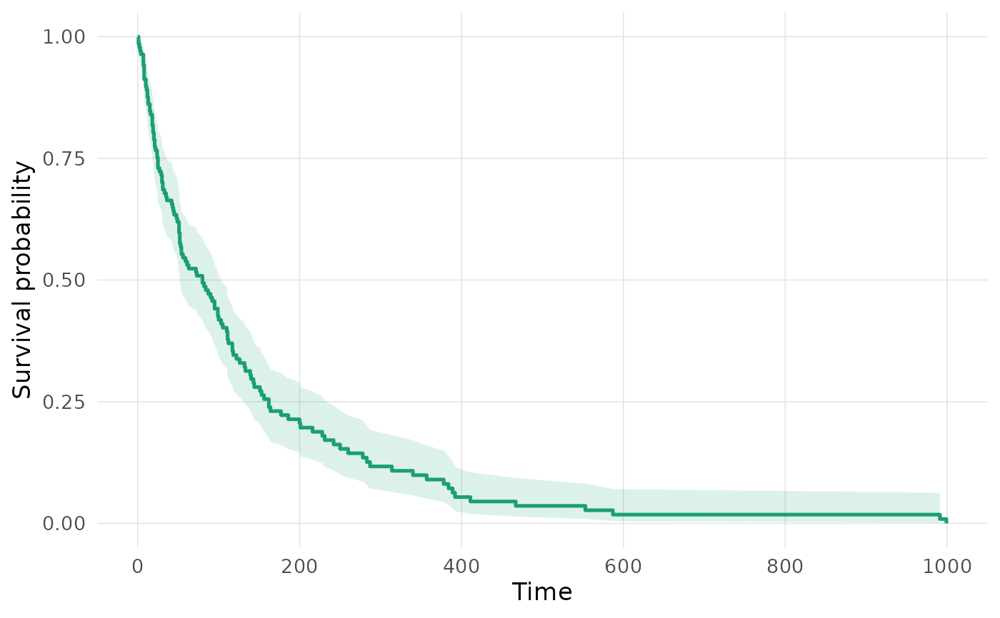
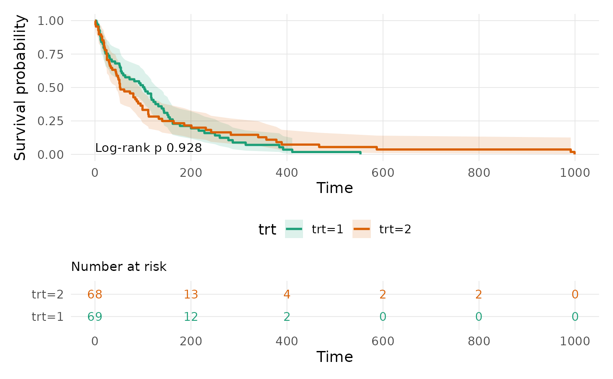

Kaplan-Meier Survival Curve with Risk Table (survminer-Inspired)
Source:R/plot-survcurve.R
plot_survcurve.RdProduces a styled Kaplan-Meier survival curve with an optional confidence
band, log-rank p-value annotation, and an aligned number-at-risk table
beneath the curve, in the spirit of survminer::ggsurvplot() but
implemented natively with ggplot2 (no dependency on
survminer).
Usage
plot_survcurve(
formula,
data,
conf.int = TRUE,
risk.table = TRUE,
pval = TRUE,
break.time.by = NULL,
xlab = "Time",
ylab = "Survival probability",
legend.title = NULL,
title = NULL
)Arguments
- formula
A survival formula, e.g.
Surv(time, status) ~ 1orSurv(time, status) ~ group. The right-hand side determines stratification (as insurvfit).- data
A data frame containing the variables in
formula.- conf.int
Logical; draw a confidence ribbon around each curve (default
TRUE).- risk.table
Logical; draw an aligned number-at-risk table beneath the curve (default
TRUE). Requires the patchwork package.- pval
Logical; annotate the plot with a log-rank test p-value when there are 2 or more strata (default
TRUE).- break.time.by
Numeric spacing of x-axis breaks (and risk-table columns). If
NULL(default), a suitable spacing is chosen automatically viapretty().- xlab, ylab
Axis labels (defaults
"Time"and"Survival probability").- legend.title
Legend/strata title. If
NULL(default), uses the stratifying variable name, or is omitted entirely for an unstratified curve.- title
Plot title.
NULL(default) omits it, matching the package's otherplot_*()functions and suiting journals that require caption-only figures.
Value
If risk.table = FALSE, a single ggplot2 object. If
risk.table = TRUE, a combined patchwork object (KM curve
stacked above the risk table).
Examples
plot_survcurve(Surv(time, status) ~ 1, data = veteran, risk.table = FALSE)
#> Warning: Removed 1 row containing missing values or values outside the scale range
#> (`geom_ribbon()`).

# \donttest{
plot_survcurve(Surv(time, status) ~ trt, data = veteran)
#> Warning: Removed 2 rows containing missing values or values outside the scale range
#> (`geom_ribbon()`).

# }